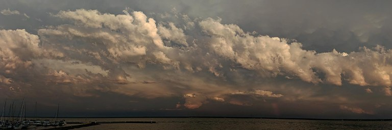

August 2019 Exhibit in Washburn

This site is preserved in memory of Peter Fraterdeus (1954-2020) by his family, with love always.
Atmospheres: Cloudscapes and Calligraphies — 8-31 August 2019, Washburn Cultural Center, 1 East Bayfield, Washburn, Wisconsin
View the Google photos album here
A Make a Mindful Mark Exhibit — New and retrospective work by Peter Fraterdeus, including grand scale panoramic photographs, East Asian Shodo, western calligraphy, lettercarving and more!
Any of the photos can be provided for your business, home, office or studio as canvas, metal or acrylic prints. Bring the brilliance of the beautiful sky to your spaces! Please contact us for information.
Schedule private or semi-private sessions in calligraphy, shodo, photography and more
Please see makeamindfulmark.com for info on my upcoming seminars, workshops and retreats!
Please join the artist at the exhibit opening reception, August 8th, 2019 5-7pm
There will be demonstrations of calligraphy at the gallery at 2-4 pm on Thursday Aug 15th and 29th.
The photo album of the show can be viewed here
PDF downloads of the Artist's Statements, Exhibit Catalog and Gallery Notices can be found here